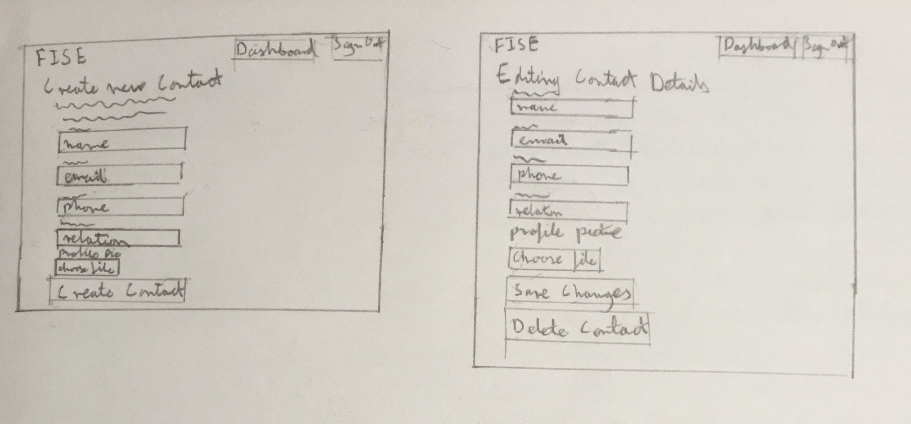
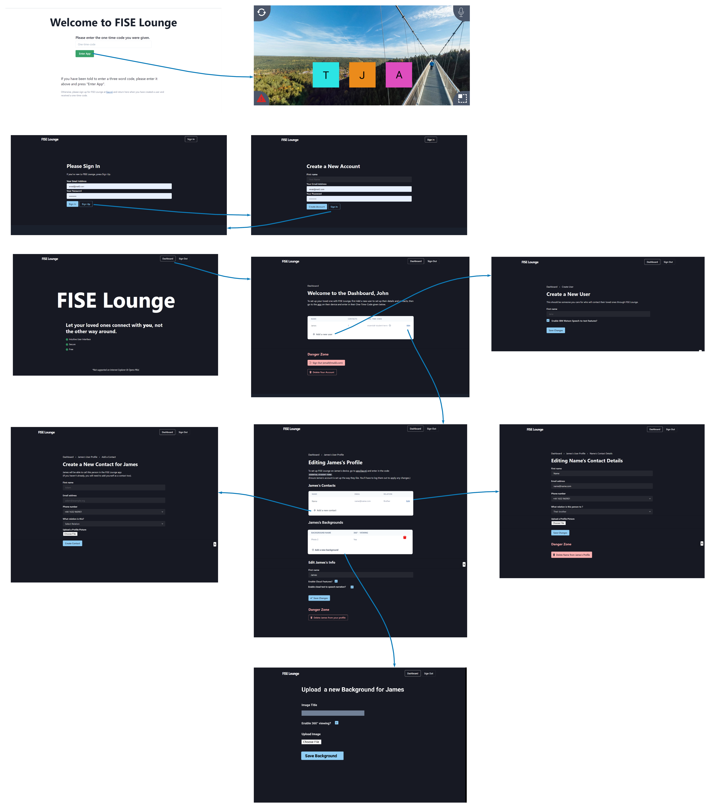

Design Principles
The UI is an important aspect of our project, and it is a key requirement for the app to be simple to use and accessible to the elderly. More specifically, the app could be used by people who are shielding, whether that is due to COVID-19 or for other reasons. Therefore, we have based our design on gerontological studies [1] which outline guidelines when it comes to designing UI tailored towards elderly people.
From these studies, we have derived several principles which we made sure to follow during development. Some of these include:
- No need for double clicking
- Graphics should be relevant (not for decoration)
- Simple and meaningful icons
- No pull-down menus
- No deep hierarchy (don’t have too many sub-levels)
- Information grouped into relevant categories
- Simple and clear language
- No irrelevant information on the screen
- Simple, clear and consistent layout, navigation and terminology
- Conservative use of colours
- Lack of blue and green colours
- High contrast between foreground and background
- No moving text
- Content should not all be in colour (where colour is any colour except black and white)
- Simple and easy to follow error messages
Since our app is targeted towards elderly users - some of which might be in care homes - it was very important for us to follow these points. Our target users could have disabilities such as Alzheimer’s, which is why a simple design and lack of a deep hierarchy is necessary, or, for example, they could have weak eyesight, which is why we needed to avoid certain colours and ensure high enough contrast. Another significant point for us to consider was that the elderly tend to not be very familiar with technology, which is why we avoided things such as pull-down menus. In general, we hoped that by following these guidelines our app would be more suitable for our target users.
These design principles mainly apply to the app and not to the dashboard (a page for account administration by elderies relatives or friends), since the user (typically an elderly person), is not intended to use it. The dashboard will be used by an admin, who is expected to have more experience with technology, and while we did our best to make it have a clear and simple UI, our main focus was on making the app easy to use for the elderly.
Sketches
When designing our UI, we started off by making sketches, so that we could determine roughly what it should look like.

Prototype
Based on these sketches, we then created a prototype using FIGMA, which in turn helped us finalize our UI design and move on to development. Top 2 images are the app, and the bottom images are the dashboard for account administration.
References
[1] "Kurniawan, Sri & Zaphiris, Panayiotis. (2005). Research-derived web design guidelines for older people [Online]. Available: https://www.researchgate.net/publication/ 221652473_Research-derived_web_design_guidelines_for_older_people [Accessed: 02-Dec-2020].